在欧洲人的地理概念中，近东或中东是指地中海东岸，也包括土耳其的亚洲部分和北非，即从黑海到直布罗陀海峡之间的环地中海沿岸及附近区域。近东既是人类文明的摇篮，也是西方文明的发祥地。如同美国数学史家M.克莱因所指出的，“当那些喜欢四处迁徙的游牧民族远离其出生地，在欧洲平原上游荡时，与他们毗邻的近东人民却致力于辛勤耕作，创造文明和文化。若干个世纪以后，居住在这片土地上的东方贤哲们不得不负担起教育未开化的西方人的任务。”
埃及位于地中海的东南角，处于中东和北非的交汇之地。它的西面和南面是世界上最大的撒哈拉大沙漠，东面、北面大部分被红海、地中海环绕，唯一的陆上出口是面积只有6万平方公里的西奈半岛。这座半岛的大部分被沙漠和高山覆盖，东西两侧又夹在亚喀巴湾和苏伊士湾之间。只有一条狭窄的通道连接以色列，古罗马的统治者如尤利乌斯·恺撒便是沿着这条路入侵埃及的。而在远古时代，这种外敌的侵犯几乎是不可能的，因此，埃及得以长期保持安定。
除了拥有天然的地理屏障之外，埃及还拥有一条清澈的河流，那便是世界上最长的河流——尼罗河。这条自南向北贯穿埃及全境、最后注入地中海的河流的两岸构成一条狭长而肥沃的河谷，素有“世界上最大的绿洲”之称，因为它的西边是浩瀚的撒哈拉沙漠，东边是阿拉伯沙漠。事实上，尼罗河的英文“Nile”这个词的希腊文原意便是谷地或河谷。正是由于上述两个特殊的地理因素，才造就了以古老的象形文字和巨大的金字塔为标志的绵延3000年的古埃及文明。
埃及象形文字产生于公元前3000年以前，是一种完全图像化的文字，后来被简化成一种更易书写的僧侣体和世俗体。3世纪前后，随着基督教的兴起，不仅古埃及原始宗教趋于消亡，象形文字也随之烟消云散，现存资料中使用这种文字的最后年代是公元394年的一块碑铭。与此同时，埃及基督徒改用一种稍加修改的希腊字母（这种文字随着7世纪穆斯林的入侵又逐渐被阿拉伯文取代）。于是，这些神秘的古代文字就成了不解之谜。
1799年，跟随拿破仑远征埃及的法国士兵在距离亚历山大港不远的古港口罗塞塔发现一块面积不足一平方米的石碑，上面刻着用象形文字、世俗体和希腊文三种文字记述的同一铭文。在英国医生兼物理学家托马斯·杨（T.Young，1773—1829）的工作基础上，最后由法国历史学家兼语言学家商博良（Champollion，1790—1832）完成了全部碑文的释读。这样一来，就为人们阅读象形文字和僧侣体文献，理解包括数学在内的古埃及文明打开了方便之门，而那块石碑也被后人命名为“罗塞塔石碑”，如今它被收藏在伦敦大英博物馆。
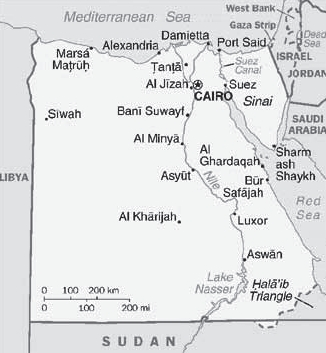
埃及地图
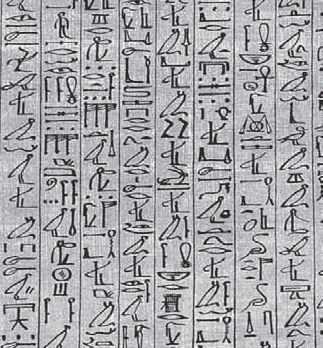
纸草书里的象形文字
如果你有机会到开罗旅行，那么除了造访金字塔、参观博物馆，在尼罗河上乘船、看肚皮舞表演以外，你的朋友或导游还会领你去看销售或制作纸莎草纸（Papyrus）的商店或作坊（通常它们是合二为一的）。原来，纸莎草这种植物生长在尼罗河三角洲中，采摘后，人们将其茎秆中心的髓切成细长的狭条，压成一片，经过干燥处理，形成薄而平滑的书写表面。古埃及人一直在这种纸上书写，并被后来的希腊人和罗马人沿用，直到3世纪才被价钱更低、可以两面书写的羊皮纸（Parchment，源自今土耳其）取代，而埃及人则一直使用到8世纪。
所谓纸草书，是指用纸莎草纸书写并装订起来的书籍（确切地说是书卷），我们今天了解的关于古埃及人的数学知识，主要是依据两部纸草书。一部以苏格兰律师兼古董商人莱茵德（A.H.Rhind，1833—1863）的名字命名，现藏于伦敦大英博物馆。另一部叫莫斯科纸草书，由俄国贵族戈列尼雪夫（1856—1947）在底比斯购得，现藏于莫斯科普希金艺术博物馆。莱茵德纸草书又被称为阿姆士纸草书，以纪念公元前1650年左右一位抄录此书的书记官。值得一提的是，阿姆士是人类历史上第一个因为对数学做出贡献而留名的人。该书卷长525厘米，宽33厘米，中间有少量缺失，其缺失的碎片现藏于纽约布鲁克林博物馆。
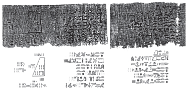
莫斯科纸草书（局部）
这两部纸草书均用僧侣体书写，年代已经十分久远，阿姆士在前言里称到那时为止此书至少流传了两个多世纪。而据专家考证，莫斯科纸草书的成书年代大约在公元前1850年。因此，这两部书堪称流传至今最古老的用文字记载数学的典籍。从内容上看，它们只不过是各种类型的数学问题集。莱茵德纸草书的主体部分由85个问题组成，莫斯科纸草书则由25个问题组成。书中的问题大多来自现实生活，比如面包的成分和啤酒的浓度，牛和家禽的饲料比例及谷物储存，但作者却将它们作为示范性的例子编辑在一起。
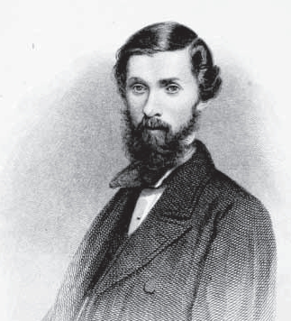
数学史留名的苏格兰古董商人莱茵德
既然几何学是“尼罗河的赠礼”，那我们就来看看古埃及人在这方面的成就。在一份古老的地方契约中，人们发现了他们求任意四边形的面积公式，如果用a和b，c和d分别表示四边形的两组对边长度，S表示面积，则
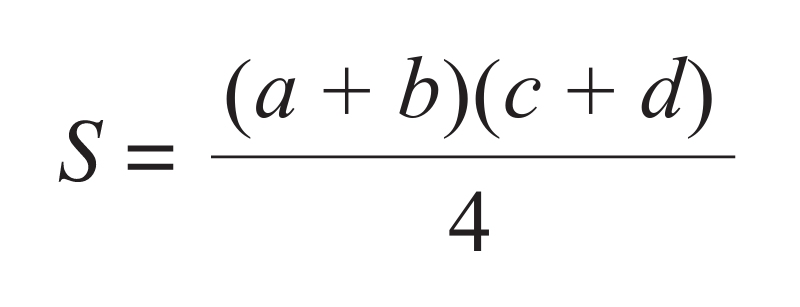
尽管这种尝试十分大胆，但却十分粗略，这个公式只对长方形这个特殊的四边形才是正确的。我们再来看圆面积的计算。在莱茵德纸草书第50题中，假设一个圆的直径为9，则其面积等于边长为8的正方形。如果比较圆面积计算公式，就会发现古埃及人心目中的圆周率（如果有这个概念）相当于
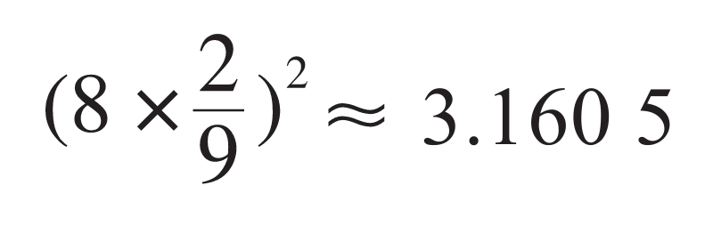
让人惊讶的是，埃及人在体积计算（其目的是为了储存粮食）问题上达到了相当高的水平，例如他们已经知道圆柱体的体积是底面积乘以高。又如，对高为h、上下底面分别是边长a和b的正方形的平截头方锥体而言，埃及人得到的体积公式是（莫斯科纸草书第14题）：
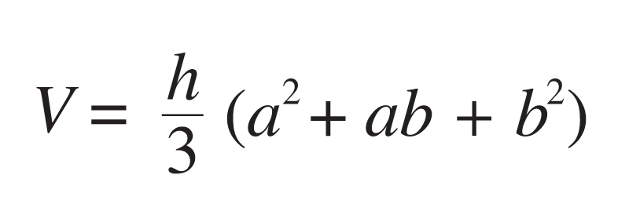
这个结论是正确的，这是一项非常了不起的成就。美国数学史家E.T.贝尔（E.T.Bell，1883—1960）称其为“最伟大的金字塔[1]”。
在石器时代，人们只需要整数，但进入更为先进的青铜时代以后，分数概念和记号便随之产生了。从纸草书中我们发现，埃及人有一个重要而有趣的特点，就是喜欢使用单位分数，即形如1/n的分数。不仅如此，他们可以把任意一个真分数（小于1的有理数）表示成若干不相同的单位分数之和。例如，
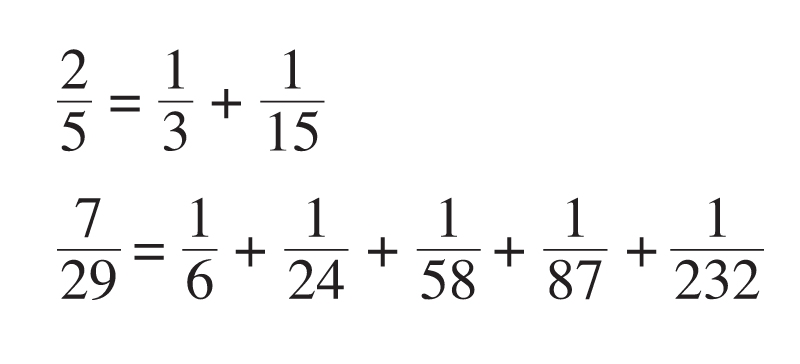
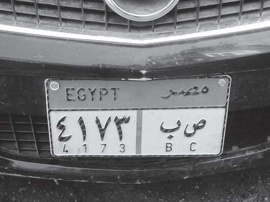
埃及汽车牌照，用两种数系书写
埃及人为何对单位分数情有独钟，我们不得而知，无论如何，利用单位分数，分数的四则运算得以进行，尽管做起来比较麻烦。也正因为如此，才有了被后人称为“埃及分数”（Egyptian fractions）的数学问题，这也是莱茵德纸草书中延伸出来的最有价值的问题。埃及分数属于数论的一个分支——不定方程（也称丢番图方程，以古希腊最后一位大数学家丢番图的名字命名），它讨论的是下列方程的正整数解
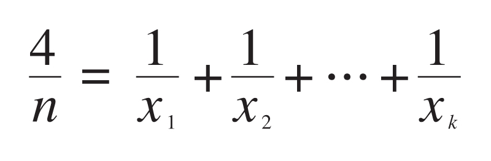
埃及分数引出了大量的问题，其中有许多至今尚未解决，而且它还不断产生新的问题。毫不夸张地说，每年世界各国有许多硕士、博士论文甚至大师们的工作都是围绕着这个问题开展的。下面我们来举几个例子，1948年，匈牙利数学家爱多士（P.Erdos，1913—1996，与陈省身分享1984年度的沃尔夫奖）和德国出生的美国数学家、爱因斯坦的助手斯特劳斯（E.Straus，1922—1983）曾经猜测：
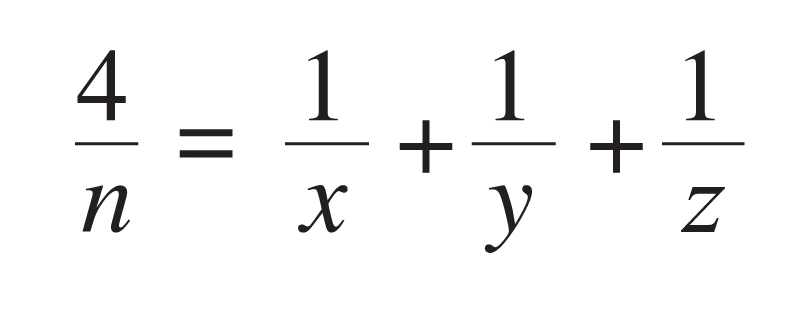
当n>1时总有解。显而易见，只要验证当n为素数p时猜想成立即可。美国出生的英国数学家莫德尔（L.J.Mordell，1888—1972，德国数学家伐尔廷斯因为证明了莫德尔猜想而获得菲尔兹奖）证明，除了n1，112，132，172，192，232（mod 804）之外，此猜想皆成立。这里a b（mod m），表示m整除a－b，称a和b关于模m同余。不难验证，当n2（mod 3），上述猜想恒定成立。事实上，
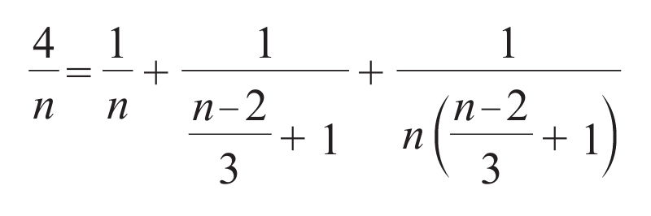
还有人验证当n<1014时猜想成立。
接下来，数论学家要考虑的问题是
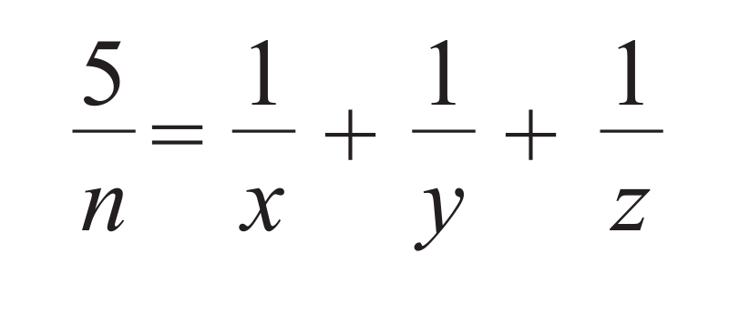
1956年，波兰数学家席宾斯基（W.Sierpinski，1882—1969）猜测，当n>1时上述方程均有解。有人验证了当n<109，或者n不是形如278460k+1的数时，此猜测为真。
可是，上述两个问题的完全解决看来遥遥无期。之所以在这里展示这两个问题的部分细节，一方面是想表明，古埃及人的数学并不是我们所想象的那样简单明了。另一方面，也想借此说明，研读某些看似简单的经典问题，常常会给处于现代文明中的我们带来新的启示。费尔马大定理便是一个很好的例子，那是一个17世纪的法国人阅读3世纪的希腊人的著作时产生的灵感。难怪20世纪现代派诗歌运动的领袖、美国诗人庞德（E.Pound，1885—1972）要说：“最古老的也是最现代的。”
[1] 在英文里，锥体和金字塔是同一个单词，即pyramid。